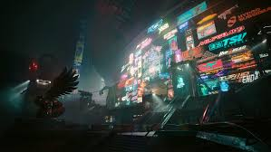

The Relic & Phantom Liberty
The core story revolves around a high-stakes heist gone wrong, leaving V with a prototype implant known as the Relic stuck in their head. This microchip contains the consciousness of Johnny Silverhand, and it is slowly overwriting V's brain. To survive, V must explore the highest corporate towers and lowest criminal dens of the city to find a cure before their identity is erased forever.
The narrative reaches new heights in the massive spy-thriller expansion, Phantom Liberty. This addition introduces Dogtown, a ruined, walled-off district ruled by a ruthless militia. V is pulled into a deadly game of espionage and political intrigue to save the President of the New United States of America, working alongside sleeper agent Solomon Reed in a high-stakes mission where trust is a luxury no one can afford.
